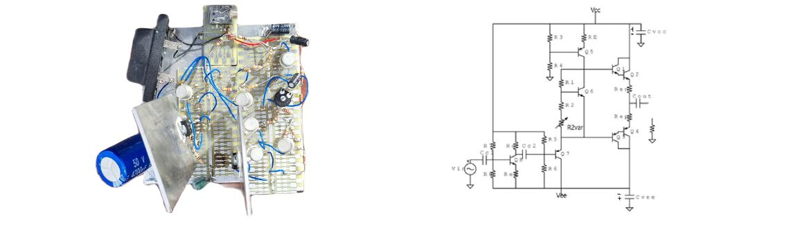

Audio Amplifier
As part of the Electronics 315 module at the University of Stellenbosch, the objective of this project was to design an audio amplifier that could deliver a minimum of 8 W undistorted power to an 8 Ω resistive load. The amplifier had to be composed of a preamplifier and a power amplifier, and had to use bipolar rail voltages provided by a bench dual power supply. The preamplifier had to amplify the input signal, which had a maximum peak voltage of 0.5 V and a maximum peak current of 1 mA, to the required level that would deliver maximum power to the load.
Various configurations were provided to choose from, and the preamplifier was required to be designed using only transistors, resistors, and capacitors. The practical aimed to illustrate the principles of Class-AB power amplifiers, power and thermal analysis requirements, circuit design within practical constraints, and the development of SPICE analysis capability.
The project involved designing and simulating the circuit using NGSPICE, building and stress-testing the physical circuit to exceed minimum specifications, and documenting the entire process in a report. The successful completion of this project required a deep understanding of electronics and practical circuit design.
If you are interested in the detail design, testing and results process you can find the report of this project on GitHub here